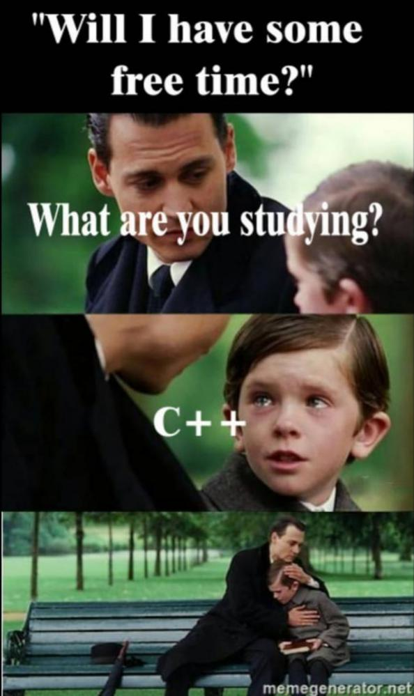
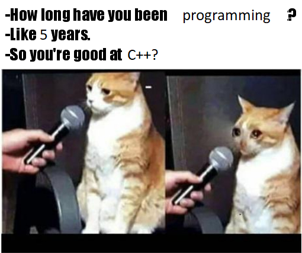

Metode de programare în C++
Pagina principală
Metoda trierii
Greedy
Backtracking
Pe parcursul dezvoltării informaticii s-a stabilit că multe probleme de o reală importanţă practică pot fi rezolvate cu ajutorul unor metode standart, denumite tehnici de programare: recursia, trierea, metoda reluării, metodele euristice, etc.
 